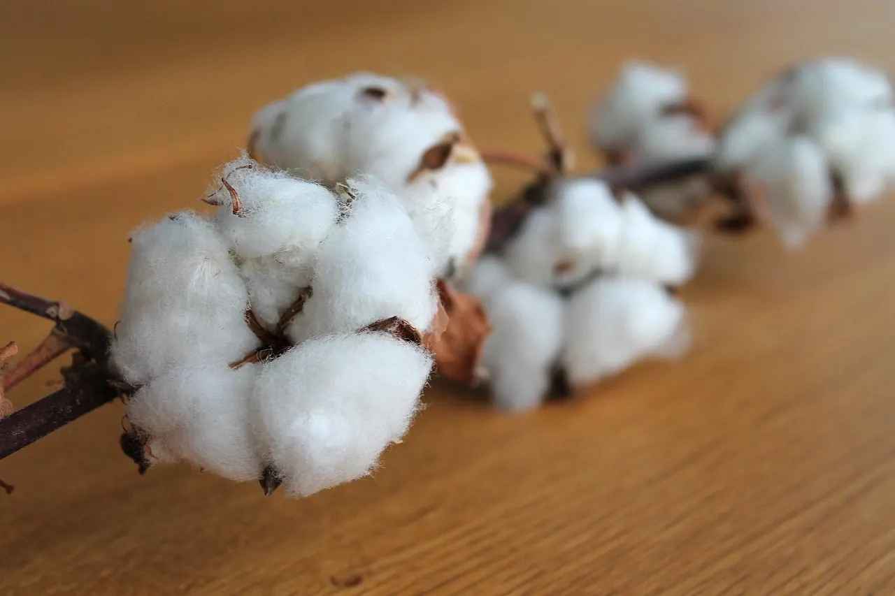

Pamuk yastığın faydaları ve kimlere uygun olduğu
Pamuk yastık neden serin tutar, ne kadar dayanır, kimler için doğru seçimdir? Silikon ve yünle dürüst bir karşılaştırma.

Pamuk yastık, Anadolu'da yorgancı dükkânlarının en eski ürünlerinden biri. Bugün raflarda silikon yastıklar çoğunlukta olsa da pamuğu soran hâlâ çok. Peki pamuk yastığın gerçek farkı ne?
Pamuk lifi nasıl davranır?
Pamuk, selülozdan oluşan bir bitki lifidir. Nemi iyi emer ve hava geçirir. Bu iki özellik, uyurken başın ve ensenin terlemesini daha rahat yönetmesini sağlar. Pamuk, sentetik elyaf gibi statik elektrik yapmaz ve tenle temasta "plastik" hissi vermez.
Pamuk yastığın avantajları
- Serin ve kuru: Gece terleyen, yastığı sık sık çeviren kişiler pamuktan memnun kalır.
- Oturaklı destek: Pamuk dolgu silikon kadar yaylanmaz, başın altında daha sabit durur. Dolgu miktarı dükkânda isteğe göre azaltılıp arttırılabilir.
- Uzun ömür: Basıklaştığında atılıp kabartılarak yeniden kullanılır.
- Doğal lif: Sentetik istemeyenler için iyi bir seçenek.
Bilmeniz gereken dezavantajlar
- Dolgu yıkanmaz: Pamuk dolgu ıslanırsa topaklanır ve geç kurur. Mutlaka kılıfla kullanılır; kılıf yıkanır.
- Silikona göre ağırdır ve ilk günlerde biraz sert gelebilir.
- Zamanla basıklaşır: Kullanıma göre 1–3 yılda bir kabartma gerekebilir.
Pamuk mu, silikon mu, yün mü?
| Özellik | Pamuk | Silikon | Yün |
|---|---|---|---|
| Serinlik / nefes | Çok iyi | Orta | İyi |
| Destek | Oturaklı | Yumuşak, yaylı | Orta |
| Yıkama | Dolgu yıkanmaz | Makinede | Dolgu yıkanmaz |
| Yenileme | Kabartılır | Değiştirilir | Kabartılır |
Pamuk yastık boyun ağrısına iyi gelir mi?
Hiçbir yastık türü tek başına boyun ağrısını tedavi etmez. Araştırmalar (örneğin Avustralya'da Gordon ve arkadaşlarının yan yatanlarla yaptığı çalışmalar) yastığın yüksekliği ve sertliğinin sabah boyun tutulması ve uyku konforu üzerinde etkili olduğunu gösteriyor; dolgunun cinsinden çok, başınızı omurgayla aynı hizada tutup tutmadığı önemli. Pamuğun avantajı, dolgu miktarının sizin için ayarlanabilmesi. Ağrınız devam ediyorsa fizik tedavi uzmanına danışın. Yatış pozisyonuna göre seçimi yastık seçimi rehberimizde anlattık.
Kimlere uygun?
- Gece terleyenler ve sıcak odada uyuyanlar
- Başı yastığa gömülsün istemeyen, sabit destek sevenler
- Doğal lif tercih edenler
Sorunuz mu var?
Yatağınızın ölçüsünü, odanızın ne kadar sıcak olduğunu ya da yorganınızın fotoğrafını gönderin; Ramazan usta önerisini söylesin.
Sık sorulan sorular
Pamuk yastık yıkanır mı?
Dolgusu yıkanmaz; ıslanırsa topaklanır. Kılıfla kullanın ve kılıfı yıkayın. Basıklaşınca dükkânda kabarttırabilirsiniz.
Pamuk yastık ne kadar dayanır?
Bakımına göre yıllarca. Basıklaştığında açılıp kabartılarak yenilenir.
Pamuk yastık sert mi?
Silikona göre daha oturaklıdır. Dolgu miktarı dükkânda isteğinize göre ayarlanabilir.
Yazıda geçen ürünler


Kaynaklar
- Gordon S.J., Grimmer-Somers K.A., Trott P.H. (2010). Pillow use: the behaviour of cervical stiffness, headache and scapular/arm pain. Journal of Pain Research, 3, 137–145.
- Cotton Incorporated, Cotton fiber properties (teknik bülten).
Bu yazı genel bilgilendirme amaçlıdır; tıbbi tavsiye değildir. Sağlıkla ilgili şikâyetleriniz için hekiminize danışın.